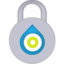

Tor (previously TOR, an acronym for The Onion Router) is a free software for enabling online anonymity. Tor directs Internet traffic through a free, worldwide, volunteer network consisting of more than four thousand relays to conceal a user's location or usage from anyone conducting network surveillance or traffic analysis. Using Tor makes it more difficult to trace Internet activity, including “visits to Web sites, online posts, instant messages, and other communication forms”, back to the user and is intended to protect the personal privacy of users, as well as their freedom and ability to conduct confidential business by keeping their internet activities from being monitored.
Progetti supportati

AntiPrism
Live USB/memory card OpenELEC-based media server toolbox platform for securing the online presence, web browsing and communications.

Bitmessage
Servizio di messaggistica P2P criptato e decentralizzato, basato sulla tecnologia Bitcoin.

JonDo Live CD
Live CD/USB basato su Debian con strumenti preconfigurati per una navigazione anonima e molto altro.

Mozilla Thunderbird
Applicazione per email multipiattaforma con supporto alla cifratura tramite il componente aggiuntivo Enigmail.

Orweb
Proxy-capable and Privacy-aware Web Browser for use with Orbot’s localhost 8118 proxy, or any HTTP proxy server.


Tor
Tor (precedentemente TOR, acronimo di The Onion Router)[citazione non necessaria] è un software libero per una navigazione anonima online. T…



Whonix
Sistema operativo VM-compatibile basato su Debian e Tor incentrato sull’anonimato, privacy e sicurezza.